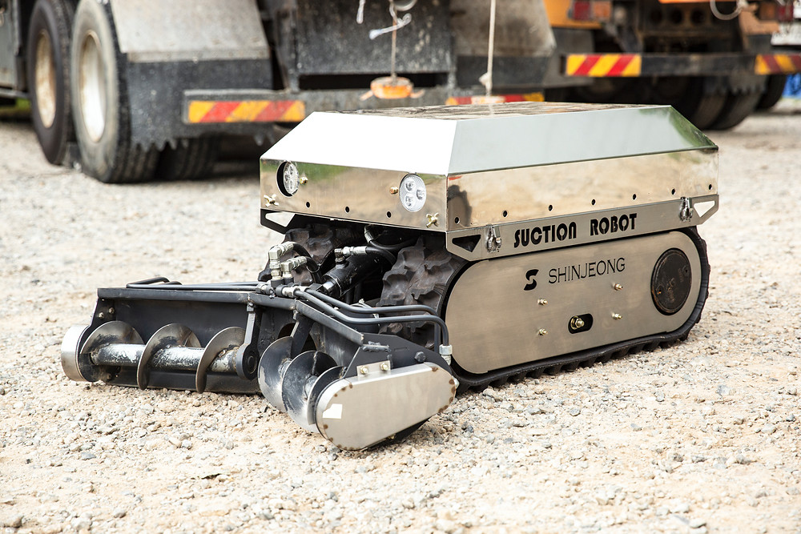

Unmanned Vacuum RobotGenerations 1–5 · suction · crushing & suction · crushing
Sucks up or breaks up hazardous material inside tanks and ponds, and recovers it.
Where it goesTankPondOpen ditchReactorPipeline
What it is used for
- Works in explosion-proof (high-risk gas) areas — hydraulic drive, rubber tracks, non-spark crushing and contact parts
- Underwater work and water-jet cleaning at the same time
- Can carry extra equipment such as CCTV and jets